FeatureImp computes feature importance for prediction models. The
importance is measured as the factor by which the model's prediction error
increases when the feature is shuffled.
Details
To compute the feature importance for a single feature, the model prediction loss (error) is measured before and after shuffling the values of the feature. By shuffling the feature values, the association between the outcome and the feature is destroyed. The larger the increase in prediction error, the more important the feature was. The shuffling is repeated to get more accurate results, since the permutation feature importance tends to be quite unstable. Read the Interpretable Machine Learning book to learn about feature importance in detail: https://christophm.github.io/interpretable-ml-book/feature-importance.html
The loss function can be either specified via a string, or by handing a
function to FeatureImp(). If you want to use your own loss function it
should have this signature:
function(actual, predicted)
Using the string is
a shortcut to using loss functions from the Metrics package. Only use
functions that return a single performance value, not a vector. Allowed
losses are: "ce", "f1", "logLoss", "mae", "mse", "rmse", "mape",
"mdae", "msle", "percent_bias", "rae", "rmse", "rmsle", "rse",
"rrse" and "smape".
See library(help = "Metrics") to get a list of functions.
Parallelization
Parallelization is supported via package future. To initialize future-based parallelization, select an appropriate backend and specify the amount of workers. For example, to use a PSOCK based cluster backend do:
future::plan(multisession, workers = 2)
<iml function here>
Consult the resources of the future package for more parallel backend options.
References
Fisher, A., Rudin, C., and Dominici, F. (2018). Model Class Reliance: Variable Importance Measures for any Machine Learning Model Class, from the "Rashomon" Perspective. Retrieved from http://arxiv.org/abs/1801.01489
Super class
iml::InterpretationMethod -> FeatureImp
Public fields
loss(
character(1)| function)
The loss function. Either the name of a loss (e.g."ce"for classification or"mse") or a function.original.error(
numeric(1))
The loss of the model before perturbing features.n.repetitionsinteger
Number of repetitions.compare(
character(1))
Either"ratio"or"difference", depending on whether the importance was calculated as difference between original model error and model error after permutation or as ratio.features(
list)
Features for which importance scores are to be calculated. The names are the feature/group names, while the contents specify which feature(s) are to be permuted.
Methods
Inherited methods
Method new()
Create a FeatureImp object
Usage
FeatureImp$new(
predictor,
loss,
compare = "ratio",
n.repetitions = 5,
features = NULL
)Arguments
predictorPredictor
The object (created withPredictor$new()) holding the machine learning model and the data.loss(
character(1)| function)
The loss function. Either the name of a loss (e.g."ce"for classification or"mse") or a function. See Details for allowed losses.compare(
character(1))
Either"ratio"or"difference". Should importance be measured as the difference or as the ratio of original model error and model error after permutation?Ratio: error.permutation/error.orig
Difference: error.permutation - error.orig
n.repetitions(
numeric(1))
How often should the shuffling of the feature be repeated? The higher the number of repetitions the more stable and accurate the results become.features(
character or list)
For which features do you want importance scores calculated. The default value ofNULLimplies all features. Use a named list of character vectors to define groups of features for which joint importance will be calculated. See examples.
Returns
(data.frame)
data.frame with the results of the feature importance computation. One
row per feature with the following columns:
importance.05 (5% quantile of importance values from the repetitions)
importance (median importance)
importance.95 (95% quantile) and the permutation.error (median error over all repetitions).
The distribution of the importance is also visualized as a bar in the plots, the median importance over the repetitions as a point.
Examples
library("rpart")
# We train a tree on the Boston dataset:
data("Boston", package = "MASS")
tree <- rpart(medv ~ ., data = Boston)
y <- Boston$medv
X <- Boston[-which(names(Boston) == "medv")]
mod <- Predictor$new(tree, data = X, y = y)
# Compute feature importances as the performance drop in mean absolute error
imp <- FeatureImp$new(mod, loss = "mae")
# Plot the results directly
plot(imp)
 # Since the result is a ggplot object, you can extend it:
library("ggplot2")
plot(imp) + theme_bw()
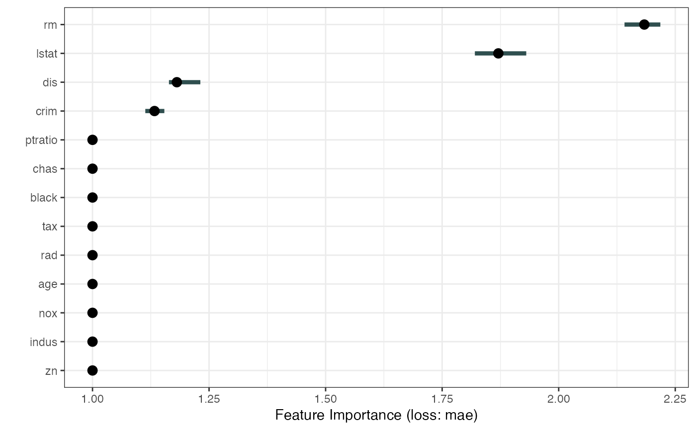
# If you want to do your own thing, just extract the data:
imp.dat <- imp$results
head(imp.dat)
#> feature importance.05 importance importance.95 permutation.error
#> 1 rm 2.135926 2.157372 2.213222 6.277308
#> 2 lstat 1.875275 1.956849 1.973995 5.693847
#> 3 dis 1.147384 1.168364 1.196060 3.399590
#> 4 crim 1.138652 1.154689 1.157714 3.359802
#> 5 zn 1.000000 1.000000 1.000000 2.909702
#> 6 indus 1.000000 1.000000 1.000000 2.909702
ggplot(imp.dat, aes(x = feature, y = importance)) +
geom_point() +
theme_bw()
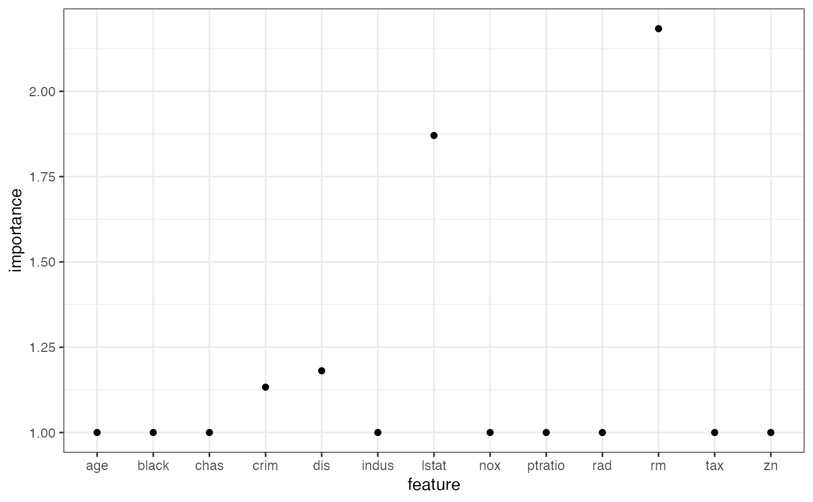
# We can also look at the difference in model error instead of the ratio
imp <- FeatureImp$new(mod, loss = "mae", compare = "difference")
# Plot the results directly
plot(imp)
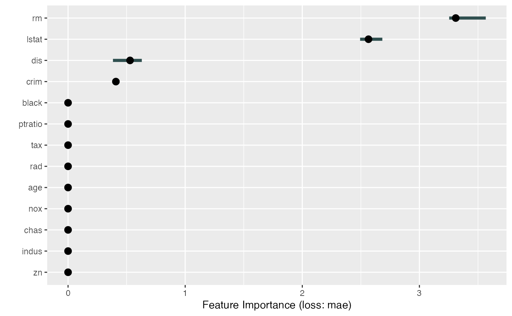
# We can calculate feature importance for a subset of features
imp <- FeatureImp$new(mod, loss = "mae", features = c("crim", "zn", "indus"))
plot(imp)
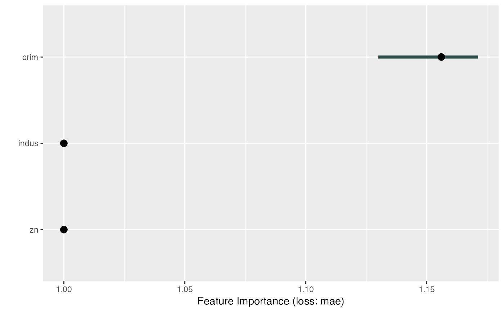
# We can calculate joint importance of groups of features
groups = list(
grp1 = c("crim", "zn", "indus", "chas"),
grp2 = c("nox", "rm", "age", "dis"),
grp3 = c("rad", "tax", "ptratio", "black", "lstat")
)
imp <- FeatureImp$new(mod, loss = "mae", features = groups)
plot(imp)
# FeatureImp also works with multiclass classification.
# In this case, the importance measurement regards all classes
tree <- rpart(Species ~ ., data = iris)
X <- iris[-which(names(iris) == "Species")]
y <- iris$Species
mod <- Predictor$new(tree, data = X, y = y, type = "prob")
# For some models we have to specify additional arguments for the predict function
imp <- FeatureImp$new(mod, loss = "ce")
plot(imp)
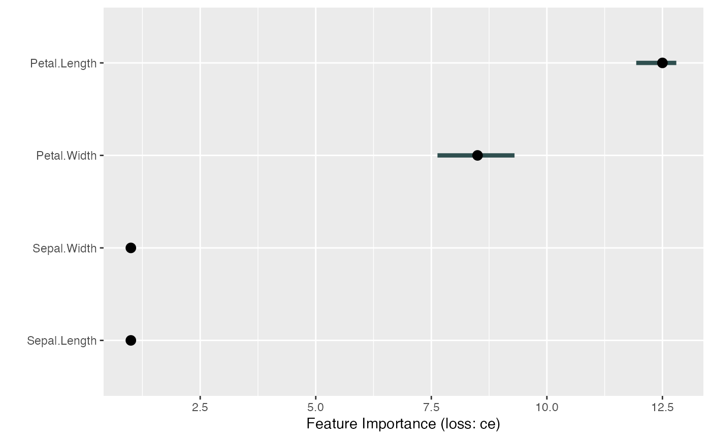
# For multiclass classification models, you can choose to only compute
# performance for one class.
# Make sure to adapt y
mod <- Predictor$new(tree,
data = X, y = y == "virginica",
type = "prob", class = "virginica"
)
imp <- FeatureImp$new(mod, loss = "ce")
plot(imp)
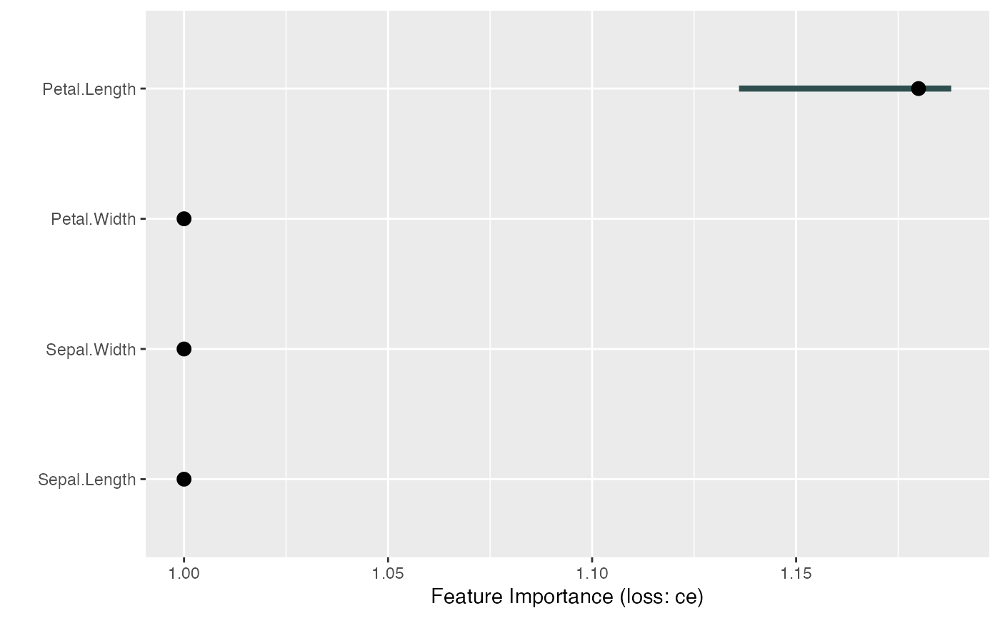
# Since the result is a ggplot object, you can extend it:
library("ggplot2")
plot(imp) + theme_bw()
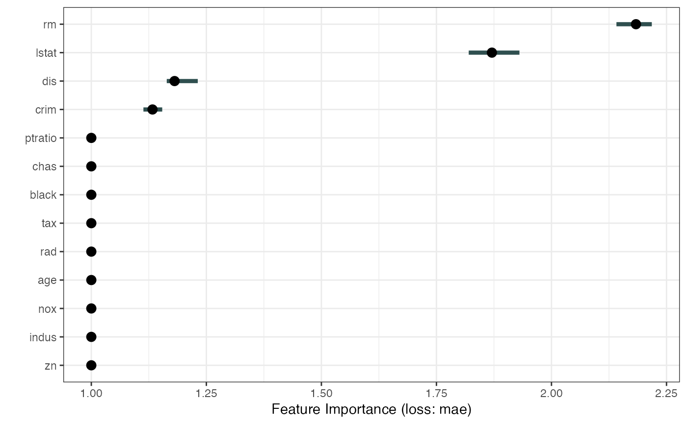
# If you want to do your own thing, just extract the data:
imp.dat <- imp$results
head(imp.dat)
#> feature importance.05 importance importance.95 permutation.error
#> 1 rm 2.135926 2.157372 2.213222 6.277308
#> 2 lstat 1.875275 1.956849 1.973995 5.693847
#> 3 dis 1.147384 1.168364 1.196060 3.399590
#> 4 crim 1.138652 1.154689 1.157714 3.359802
#> 5 zn 1.000000 1.000000 1.000000 2.909702
#> 6 indus 1.000000 1.000000 1.000000 2.909702
ggplot(imp.dat, aes(x = feature, y = importance)) +
geom_point() +
theme_bw()
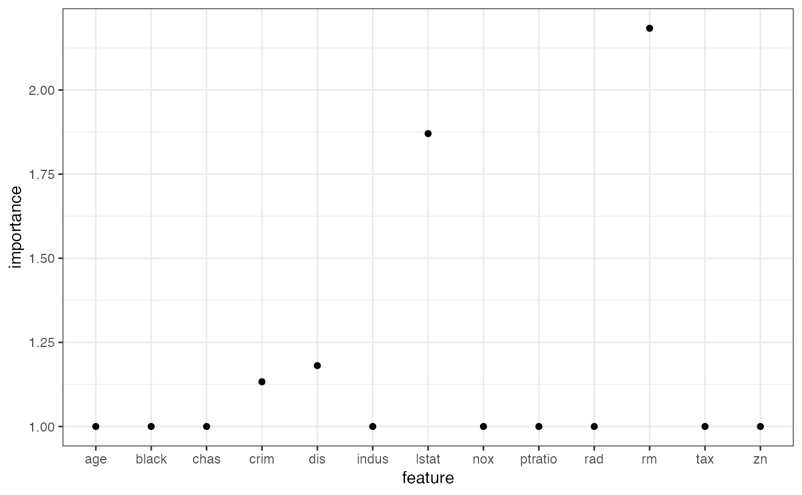
# We can also look at the difference in model error instead of the ratio
imp <- FeatureImp$new(mod, loss = "mae", compare = "difference")
# Plot the results directly
plot(imp)
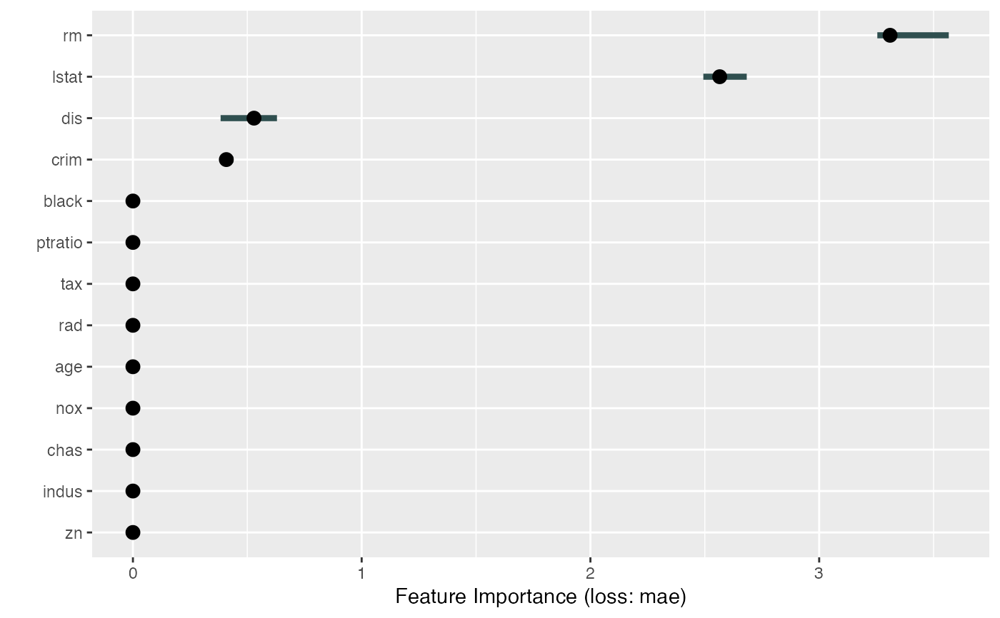
# We can calculate feature importance for a subset of features
imp <- FeatureImp$new(mod, loss = "mae", features = c("crim", "zn", "indus"))
plot(imp)
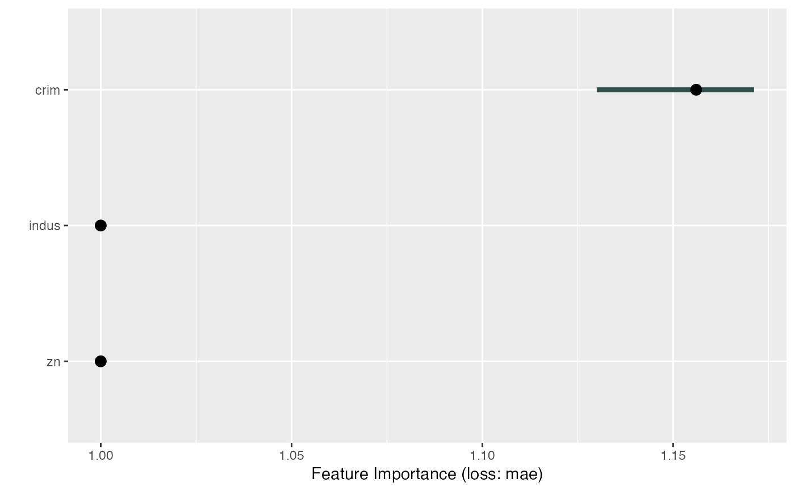
# We can calculate joint importance of groups of features
groups = list(
grp1 = c("crim", "zn", "indus", "chas"),
grp2 = c("nox", "rm", "age", "dis"),
grp3 = c("rad", "tax", "ptratio", "black", "lstat")
)
imp <- FeatureImp$new(mod, loss = "mae", features = groups)
plot(imp)
# FeatureImp also works with multiclass classification.
# In this case, the importance measurement regards all classes
tree <- rpart(Species ~ ., data = iris)
X <- iris[-which(names(iris) == "Species")]
y <- iris$Species
mod <- Predictor$new(tree, data = X, y = y, type = "prob")
# For some models we have to specify additional arguments for the predict function
imp <- FeatureImp$new(mod, loss = "ce")
plot(imp)
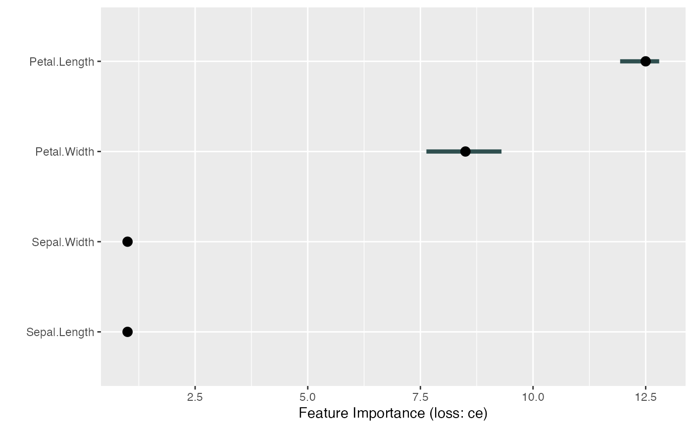
# For multiclass classification models, you can choose to only compute
# performance for one class.
# Make sure to adapt y
mod <- Predictor$new(tree,
data = X, y = y == "virginica",
type = "prob", class = "virginica"
)
imp <- FeatureImp$new(mod, loss = "ce")
plot(imp)
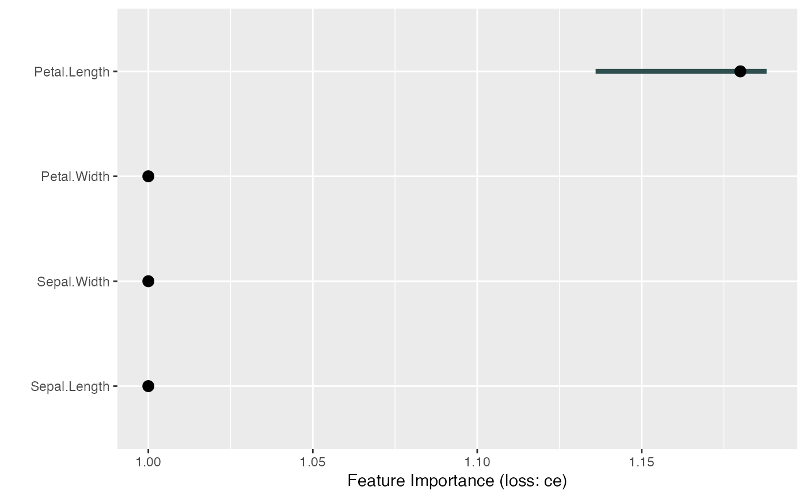